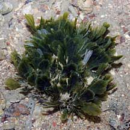
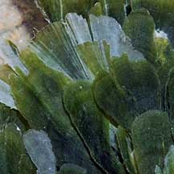
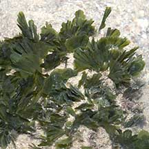
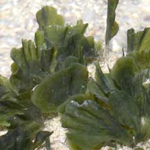
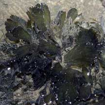
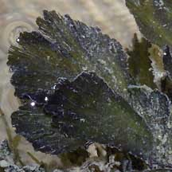

|
|
| green seaweeds text index | photo index |
| Seaweeds > Division Chlorophyta |
| Pleated
fan green seaweed Rhipidosiphon javensis* Family Udoteaceae updated Jul 2025 Where seen? This smooth fan-shaped seaweed in clusters is sometimes seen on some of our Northern shores, growing on and among coral rubble. Elsewhere also in sand. It was previously known as Udotea javensis. Features: A long fan- or spatula-shaped blade (2-3cm long) that are thin and floppy without ruffled edges although the thin blades may be folded in pleats, in clusters of several blades. The blade is made up of a tangle of tiny filaments that give it a velvety texture and is slightly to moderately calcified. The stem that holds up the blade (stipe) is calcified. Usually bright green. Sometimes confused with other fan-shaped green seaweeds. Here's more on how to tell apart fan-shaped green seaweeds. Human uses: Some species have anti-bacterial and anti-tumor properties. |
 Beting Bronok, Jul 08  |
 Labrador, Jul 05  |
 Chek Jawa, May 05  |
*Species are difficult to positively identify without close examination of internal parts.
On this website, they are grouped by external features for convenience of display.
| Pleated fan green seaweeds on Singapore shores |
On wildsingapore
flickr
|
| Other sightings on Singapore shores |
| Rhipidosiphon
species recorded for Singapore Pham, M. N., H. T. W. Tan, S. Mitrovic & H. H. T. Yeo, 2011. A Checklist of the Algae of Singapore.
|
|
Links
References
|